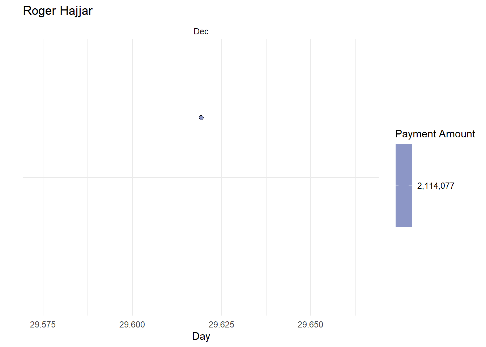
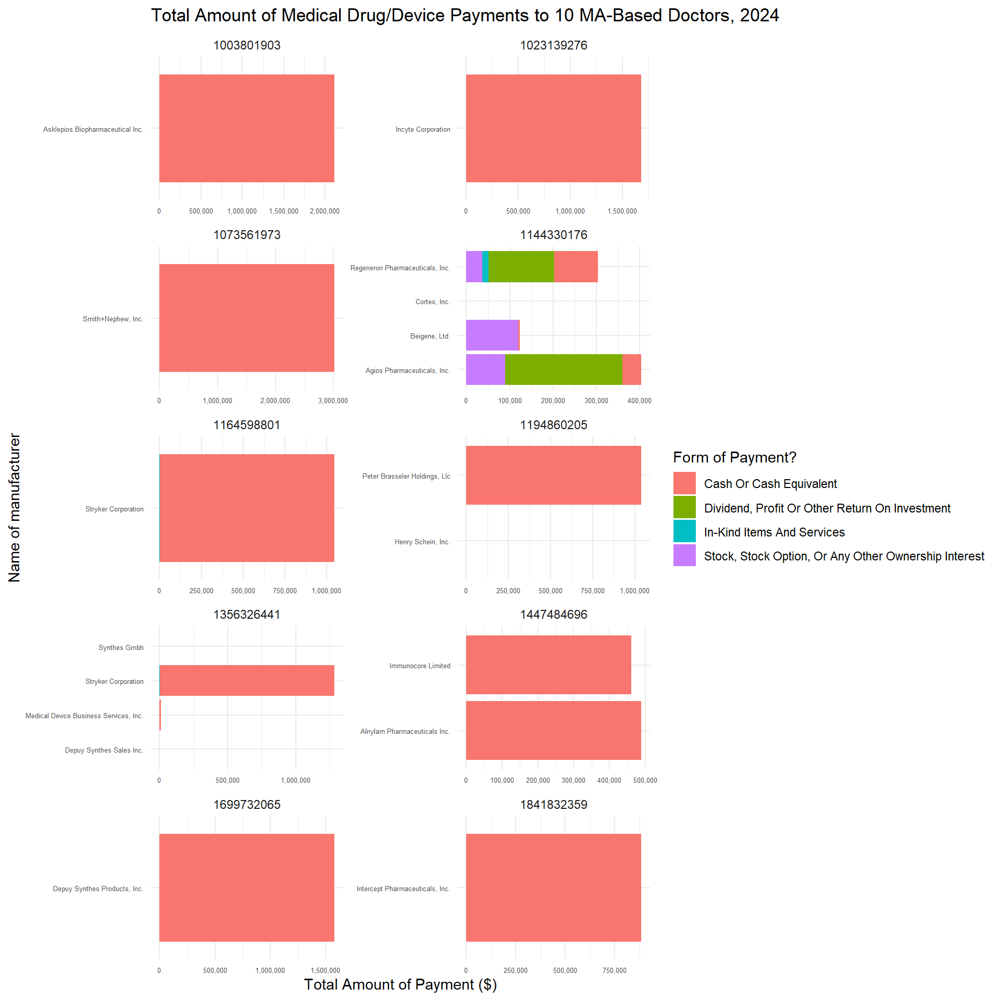

In this lab, we will program some custom R functions that allow us to analyze data related to medical conflicts of interest. Specifically, we will determine which ten Massachusetts-based doctors received the most money from pharmaceutical or medical device manufacturers in 2024. Then we will leverage our custom functions to produce a number of tables and plots documenting information about the payments made to each of these doctors. In doing so, we will update a similar analysis produced by ProPublica in 2018 called Dollars for Docs.
Learning Goals
Write custom R functions
Iterate a function over the values in a vector, using the family of map functions
Practice data cleaning and wrangling
Review of Key Terms
Tip
You may wish to reference this purrr Cheatsheet when completing this lab.
Function
a series of statements that returns a value or performs a task
Iteration
repeating a task over a series of values, vectors, or lists
CMS’s Open Payments Dataset
In 2010, the the Physician Payments Sunshine Act (2010) was passed, requiring medical drug and device manufacturers to disclose payments and other transfers of value made to physicians, non-physician practitioners, and teaching hospitals. This law was put into place to promote transparency in our medical system - enabling the U.S. government and citizens to monitor for potential medical conflicts of interest. Today, every time a drug or medical device manufacturer makes a payment to a covered recipient, they must disclose the nature of that payment and the amount to the U.S. Centers for Medicare & Medicaid. Data about payments is then aggregated, reviewed by (and sometimes disputed by) recipients, corrected, and then published as an open government dataset.
Definitions for what counts as a reporting entity, a covered recipient, and a reportable activity have been expanding since the passing of the Physician Payments Sunshine Act as legislators have raised concerns over the degree of transparency of diversifying financial arrangements in the healthcare system. In 2020, the first settlement for violations to the Sunshine Act was announced, requiring Medtronic Inc. to pay $9.2 million to resolve allegations for failure to report. This served as a signal that enforcement is ramping up in the coming years. In 2022, the state of California passed a law requiring that medical practitioners disclose to patients that this data resource exists.
Setting Up Your Environment
Run the code below to load today’s data frames into your environment.
library(tidyverse)
Warning: package 'ggplot2' was built under R version 4.4.3
Warning: package 'tidyr' was built under R version 4.4.3
Warning: package 'stringr' was built under R version 4.4.3
Warning: package 'lubridate' was built under R version 4.4.3
Warning: One or more parsing issues, call `problems()` on your data frame for details,
e.g.:
dat <- vroom(...)
problems(dat)
Cleaning up this Data Frame
Eventually we are going to plot some timelines of payments to specific doctors, and we will need the Date_of_Payment column to be in a date-time format to do so. Right now however, these columns are strings. To get started with cleaning up this dataset, let’s convert the date columns in open_payments_original to a date-time format.
ImportantQuestion 1
Write code to convert the Date_of_Payment and the Payment_Publication_Date column to date-time format. You should first determine the format of the date in Date_of_Payment and Payment_Publication_Date and then reference the lubridate library to determine the corresponding function for parsing that date format. Finally, you will mutate the two columns.
Optional challenge: Rather than mutating each column, see if you can mutate()across() the two columns to complete this step.
# Uncomment below to write code to convert to date-time format here. # open_payments_dates_cleaned <- open_payments_original |>
To confirm that we’ve done this right, we can check whether both of the dates are in the date-time format.
ImportantQuestion 2
The is.Date function returns TRUE if a vector is in date-time format, and FALSE if it is not. Below, I’ve selected the two columns in open_payments that contain the word “date” in the column header. Determine which map() function to use in order to return a vector that indicates whether these columns are in a date-time format. If you’ve done everything correctly, you should get the output below.
# Select the appropriate map function belowopen_payments_dates_cleaned |>select(contains("date")) |>_____(is.Date)
Check out what happens if you swap out your map function above for map, map_chr, or map_int. Can you figure out the relationship between these values and the original values?
It’s important to note that the unit of observation in this dataset is not one medical practitioner, and it is not one manufacturer. Instead it is one payment from a manufacturer to a medical practitioner. That means that a medical practitioner can appear multiple times in the dataset if they’ve received multiple payments, and a medical drug or device manufacturer can appear multiple times in the dataset if they’ve disbursed multiple payments. We can identify medical practitioners with the Covered_Recipient_NPI column and manufacturers with the Applicable_Manufacturer_or_Applicable_GPO_Making_Payment_ID column.
…but we want to know more than just the ID of a medical practitioner. To identify which doctors are receiving the most money, we also want to know that practitioner’s name, location, specialty, etc. Because practitioners’ names are manually entered into a database every time a payment is made to them, sometimes the formatting of a practitioner’s name entered for one payment can differ from how that same practitioner’s name is formatted when entered for another payment. The same goes for other variables related to that practitioner. For instance, check out how the capitalization differs for the practitioner below. In some cases, there is a middle initial, while in others, there is a full middle name; in some cases, the practitioner’s name is all capitalized, and in other cases it is not.
# A tibble: 31 × 3
Covered_Recipient_First_Name Covered_Recipient_Middl…¹ Covered_Recipient_La…²
<chr> <chr> <chr>
1 Sherine M Hassey
2 Sherine M Hassey
3 Sherine M Hassey
4 Sherine M Hassey
5 Sherine M Hassey
6 SHERINE Mary HASSEY
7 SHERINE Mary HASSEY
8 SHERINE Mary HASSEY
9 SHERINE M HASSEY
10 SHERINE M HASSEY
# ℹ 21 more rows
# ℹ abbreviated names: ¹Covered_Recipient_Middle_Name,
# ²Covered_Recipient_Last_Name
This issue with formatting exists across this entire dataset. To ensure that similar entities appear in the right buckets when we aggregate the data, we are going to standardize capitalization across the whole dataset. We’re also going to leave out the practitioner’s middle initial since it is not always included (or included in the same way).
ImportantQuestion 3
Write code to mutateacross all character columns such that strings in these columns are converted to title case. Title case refers to casing where the first letter in each word is capitalized and all other letters are lowercase. Strings can be converted to title case with the function str_to_title.
After you’ve done this, mutate a new column called Covered_Recipient_Full_Name that concatenates (hint: i.e. paste()) together Covered_Recipient_First_Name and Covered_Recipient_Last_Name.
Store the resulting data frame in open_payments.
# Uncomment below to clean up strings# open_payments <- open_payments_dates_cleaned |>
As we saw before, one Covered_Recipient_NPI was associated with multiple names if the names were capitalized in some cases and not others. Now that we’ve standardized the formatting of these names, there ideally should be one full name associated with every Covered_Recipient_NPI. Let’s compare the length of unique Covered_Recipient_NPI values to the length of unique Covered_Recipient_Full_Name values to check whether this is the case.
ImportantQuestion 4
Write a function below called num_unique. The function should calculate the length of unique values in the vector passed to the argument x.
Below, I’ve selected the two columns in open_payments that we want to iterate this function over. Determine which map() function to use in order to return a numeric vector that indicates the length of unique values in each of these columns. If you’ve done everything correctly, you should get the output below.
num_unique <-function(x) {# Write function here.}open_payments |>select(Covered_Recipient_NPI, Covered_Recipient_Full_Name) |>_____(_____) # Determine which map function to call here.
Notice that there are still more full names than Covered_Recipient_NPIs, which means that certain doctors have multiple names in this dataset. Below I’ve written some code to calculate the number unique full names listed for each Covered_Recipient_NPI and filter to the rows with more than one name. Can you identify some reasons why we might have multiple names listed for this same medical practitioner in this data frame?
# A tibble: 818 × 2
Covered_Recipient_NPI Covered_Recipient_Full_Name
<dbl> <chr>
1 1992991657 Lana Schumacher- Beal
2 1992991657 Lana Schumacher-Beal
3 1992991657 Lana Schumacher
4 1992932453 Jessica Ravikoff
5 1992932453 Jessica Allegretti
6 1992788160 Jonathan Slater
7 1992788160 John Slater
8 1992712178 Pasi Janne
9 1992712178 Pasi Antero Janne
10 1992059679 Carolyn Bagley
# ℹ 808 more rows
Because of these issues, it is important that we use the Covered_Recipient_NPI to identify doctors vs. the full name.
Now that we have a final cleaned up open_payments data frame, let’s remove the other data frames from our environment.
Ultimately, our aim is to produce a number of tables and plots for each of the ten MA-based doctors that received the most money from medical drug and device manufacturers in 2024. This means that one of our first analysis steps is to identify those 10 medical practitioners.
ImportantQuestion 5
Write code to determine the 10 medical practitioners that received the most money from drug and device manufacturers in 2024, and store your results in top_10_doctors. Your final data frame should have 10 rows and columns for Covered_Recipient_NPI and sum_total_payments.
# Uncomment below and write data wrangling code#top_10_doctors <- open_payments |>
Right now the values that we will eventually want to iterate over in our analysis are stored as columns in a dataframe. …but remember that the family of purrr functions allows us to apply a function to each element of a vector or list. We want to create a series of vectors from these columns that we can iterate over. We will use the pull() function to do this.
ImportantQuestion 6
Create a vector of top_10_doctors_ids from top_10_doctors, using the pull() function.
# Uncomment and write code below to pull the top 10 doctor IDs into a vector# top_10_doctors_ids <- top_10_doctors |>
We also want a vector of doctor names associated with each of these IDs, but remember that there can be multiple names for a single doctor in this dataset. With this in mind, we are going to create a vector of the first listed name for a given Covered_Recipient_NPI in the dataset. Taking the first listed name as the doctor’s name is an imperfect solution. The first listed name could be a misspelling. It could be a doctor’s maiden name that they have since changed. This is a temporary solution, and we would want to confirm that we have the correct name for each doctor before publishing any of these findings.
ImportantQuestion 7
Create a vector containing the names of the doctors associated with the IDs in top_10_doctors_ids. First, define the function get_doctor_name. This function will:
take a doctor_id as an argument,
filter open_payments to that ID,
summarize the first()Covered_Recipient_Full_Name listed for that ID,
pull() the name value
Once this function has been defined, select the appropriate map() function to iterate top_10_doctors_ids through get_doctor_name and store the resulting character vector in top_10_doctors_names.
get_doctor_name <-function(doctor_id){# Write function code here}# Iterate the top_10_doctors_ids vector through get_doctor_name and store the results in a character vector# top_10_doctors_names <-
Now that we have the vectors we want to iterate over, we are ready to start defining our first functions.
What kind of payments did MA-based doctors receive in 2024?
To get started, let’s define a function that filters open_payments to a given doctor ID, and then calculates how much of each kind of payment has been paid to that doctor. Here is an example of what that data wrangling code would look like for a specific Covered_Recipient_NPI:
Wrap the above code in a function named calculate_payment_type_amts. Rather than filtering to 1003801903, filter based on the value passed to an argument named doctor_id.
Then, use the map() function to apply calculate_payment_type_amts to each element in the top_10_doctors_ids vector. Running this code should return a list of 10 data frames.
Finally, pipe in set_names(top_10_doctors_names) to set the names for each data frame in the list to the doctor’s name.
# Write calculate_payment_type_amts function here# Iterate calculate_payment_type_amts over top_10_doctors_ids and set names to top_10_doctors_names
When were payments made to each of these doctors in 2024?
Here’s an example of a plot we could create to answer this question for one doctor.
open_payments |>filter(Covered_Recipient_NPI ==1003801903) |>ggplot(aes(x =day(Date_of_Payment), y ="", fill = Total_Amount_of_Payment_USDollars)) +geom_jitter(pch =21, size =2, color ="black") +theme_minimal() +labs(title ="Roger Hajjar", y ="", x ="Day",fill ="Payment Amount") +scale_y_discrete(limits = rev) +scale_fill_distiller(palette ="BuPu", direction =1, labels = scales::comma) +facet_wrap(vars(month(Date_of_Payment, label =TRUE)), nrow =4)

ImportantQuestion 9
Write a function named payments_calendar. The function should:
Take a doctor_id and doctor_name as arguments
Filter open_payments to the doctor’s ID
Create payment calendar plot modeled after the one above.
Set the title of the plot to the doctor’s name
After you’ve written this function, select the appropriate map function to apply payments_calendar to each element in the top_10_doctors_ids vector and top_10_doctors_names vector.
Optional Challenge: Extend your code to include the first listed specialty for each top 10 doctor as a subtitle in each plot.
# Write payments_calendar function here# Iterate payments_calendar over top_10_doctors_ids and top_10_doctors_ids to create 10 plots
Which manufacturers paid MA-based doctors in 2024, and through what forms of payment?
Finally, let’s define a function that filters open_payments to a given doctor ID and determines how much the doctor received in compensation from different manufacturers, along with the forms of payment from each manufacturer. To do so, we will need to aggregate the data by Covered_Recipient_NPI, Applicable_Manufacturer_or_Applicable_GPO_Making_Payment_Name, and Form_of_Payment_or_Transfer_of_Value and calculate the total payments associated with each grouping.
ImportantQuestion 10
Write a function named calculate_manufacturer_payments. The function should:
Take a doctor_id as an argument
Filter open_payments to that ID
Aggregate the filtered data by Covered_Recipient_NPI, Applicable_Manufacturer_or_Applicable_GPO_Making_Payment_Name, and Form_of_Payment_or_Transfer_of_Value
Calculate the total amount of payments for each grouping
Sort the resulting data frame in descending order by the total amount of payments.
After you’ve written this function, use the map_df() function to apply calculate_manufacturer_payments to each element in the top_10_doctors_ids vector. Note how this returns one data frame rather than a list of 10 data frames.
Plot your resulting data frame as a column plot, attempting (to the best of your ability) to match the formatting of the plot below.
Optional Challenge: List the doctor’s full name in each facet band, rather than the the doctor’s ID.
# Write calculate_manufacturer_payments function here# Iterate calculate_manufacturer_payments over top_10_doctors_ids here# Plot resulting data frame here

ImportantQuestion 11 (Extra Credit, +5 points on lab)
Write a function named drugs_and_devices. The function should create a plot that shows how much money a given doctor was paid for each drug or biological device for which they received payment in 2024, grouped by the nature of payment.
After you’ve written this function, use a map function to apply drugs_and_devices to each element in the top_10_doctors_ids vector. You should produce 10 plots - one for each doctor.
# Create function here# Apply function here
CautionEthical Considerations
On September 29, 2022, California Governor Gavin Newsom signed a bill requiring that all physicians and surgeons notify patients about the Open Payments database on their initial visit. Specifically, patients will be given the following notice: “The Open Payments database is a federal tool used to search payments made by drug and device companies to physicians and teaching hospitals. It can be found at https://openpaymentsdata.cms.gov,” and will be prompted to sign and date that they have received the notice. This policy was developed in response to concerns that, while the Open Payments database includes a great deal of information that might impact how citizens make decisions about their healthcare, very few people knew of the database. Do you think this is a good solution to this problem? Should other states follow suit? Do you see any drawbacks to this policy? Share your ideas on our sds-192-discussions Slack channel.